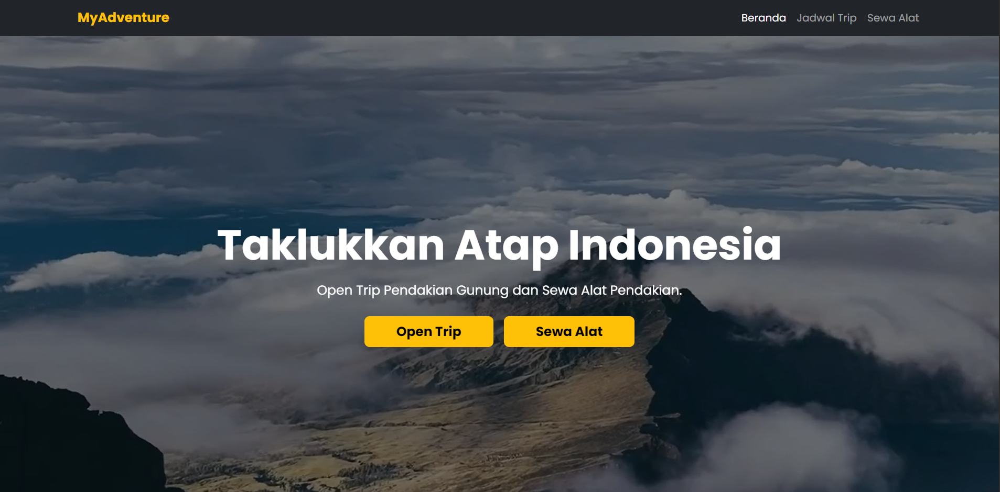
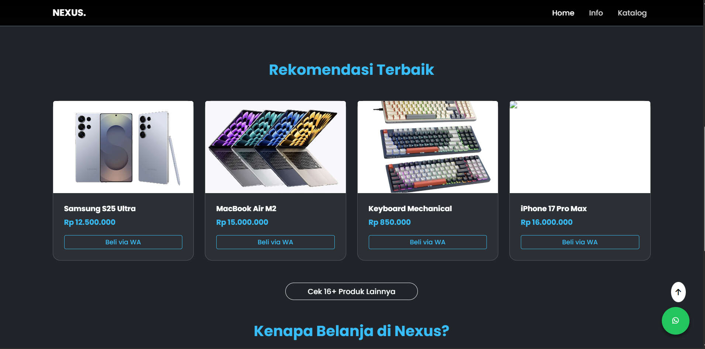

Profil
Saya adalah mahasiswa Ilmu Komputer yang berdedikasi dengan hasrat kuat dalam pengembangan perangkat lunak, khususnya di ekosistem Web Development. Kombinasi rasa ingin tahu teknologi dan komitmen akademis yang tinggi adalah fondasi utama saya.
Terbukti dengan pencapaian Indeks Prestasi Semester (IPS) 3.91 pada Semester 3, yang menunjukkan kedisiplinan dan pemahaman mendalam pada prinsip dasar TI.
Saya aktif mengeksplorasi berbagai teknologi mulai dari arsitektur full-stack, manajemen basis data, hingga dasar-dasar keamanan siber (menggunakan lingkungan Linux/Kali) untuk membangun pemahaman yang holistik dalam rekayasa perangkat lunak.
Tech Stack & Kompetensi
Proyek Unggulan
Berikut adalah beberapa karya nyata yang saya bangun untuk menerapkan dan mengasah keahlian teknikal saya.

MyAdventure
Platform website yang dirancang untuk penyedia layanan perjalanan dan *open trip*. Berfokus pada antarmuka yang bersih dan pengalaman pengguna yang intuitif.

Nexus Store
Platform e-commerce modern yang dirancang untuk memberikan pengalaman belanja online yang mulus. Berfokus pada katalog produk yang dinamis dan antarmuka responsif.